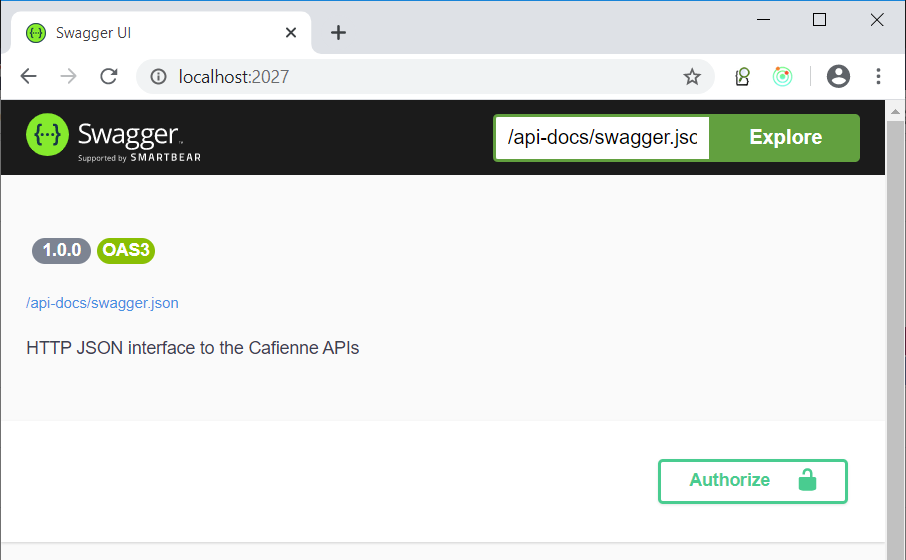

Introducing the API
This section gives a brief overview of the Cafienne Engine APIs.
The API can be used to embed the Cafienne Engine into the setup of your solution. The user interfaces that come with Cafienne, like the Generic UI and the Cafienne IDE also use these APIs.
Categorization
The APIs broadly consist of the following categories. The majority of the APIs in use is for handling cases and tasks. Furthermore there are APIs for maintenance of the platform at various levels.
/case
For starting cases, listing cases, setting case teams, getting individual case instances, etc.
/task
For getting, claiming, assigning and completing Human Tasks.
/repository
For storing and retrieving case definitions.
/tenant
For maintaining the tenant registration, like adding users, changing roles, etc.
/platform
Platform maintenance APIs, like adding tenants, changing platform owners, checking platform health.
Try it out with Swagger UI
The Cafienne Engine ships with a Swagger UI to give you a quick start in trying the APIs.

You can find the API of your version of the engine through SwaggerUI at
http://localhost:2027.
Note that the Cafienne Engine APIs need an authorization token with each request, according to the JWT standard. You can find more details about that in Cafienne Authentication.
When you click on the Authorize button in the above Swagger UI, it will lead you to the configured Identity Provider where you can login and get a token that Swagger will use when you execute requests.